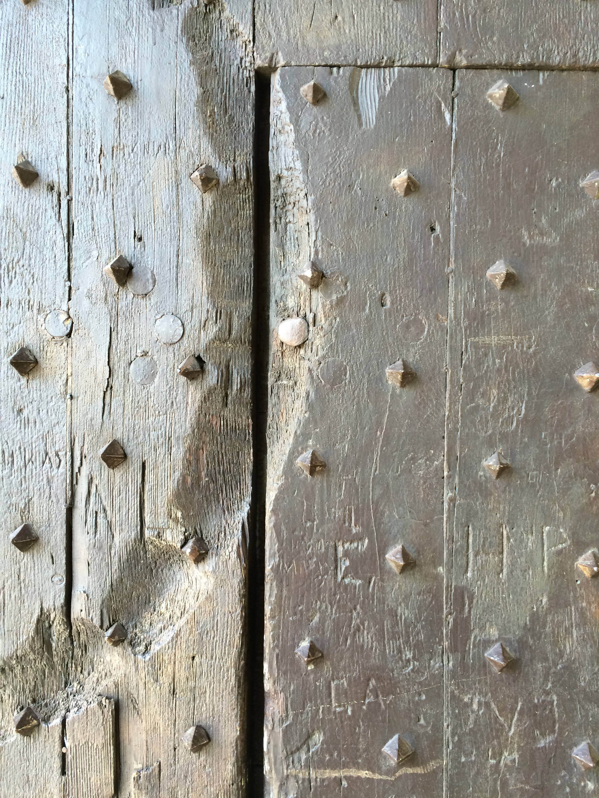

observations → La Bastille, Grenoble, Auvergne-Rhône-Alpes, France La Bastille, Grenoble, Auvergne-Rhône-Alpes, France October 3, 2014 • 45.198917, 5.725219  La Bastille, Grenoble, Auvergne-Rhône-Alpes, France